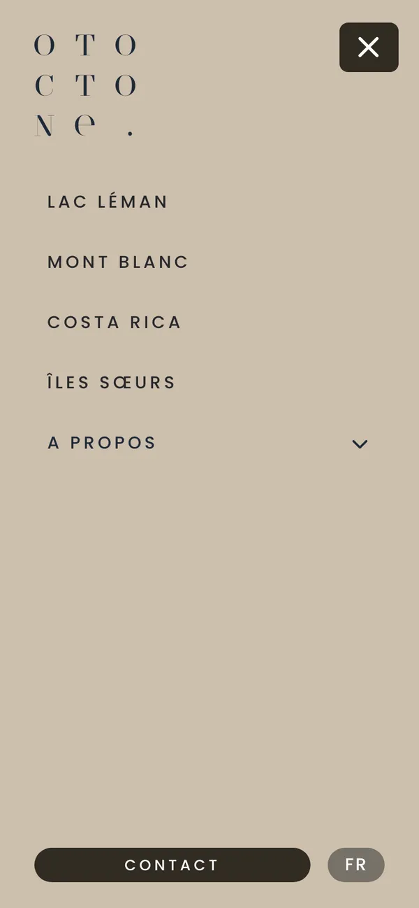
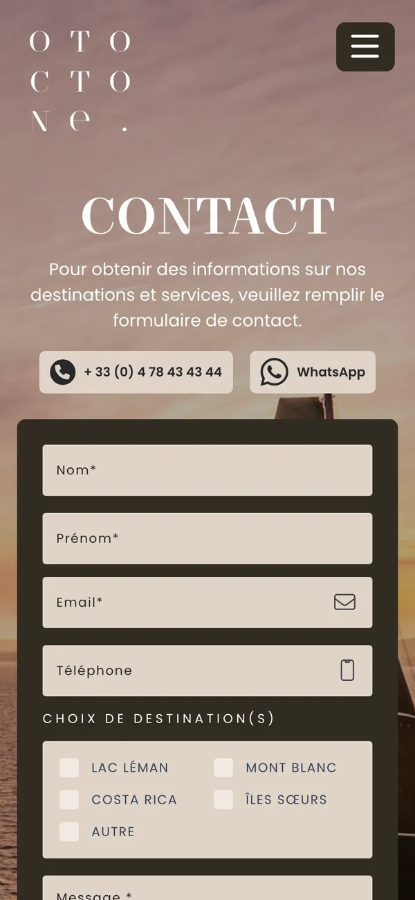

프리랜서 · 럭셔리 여행
Otoctone
레만 호숫가의 빌라, 몽블랑의 샬레, 코스타리카의 주택, 지중해의 카타마란 등 특별한 숙소를 소개하는 Otoctone 웹사이트의 새로운 스타일 작업입니다.


배경
기존 사이트의 스타일 변경
사이트의 페이지는 관리자 페이지(백오피스)에서 텍스트, 이미지, 주요 수치, FAQ, 후기 등 콘텐츠 블록을 조합해 만들어지며, 이 조합은 클라이언트가 직접 합니다.
사이트를 개발하는 에이전시의 프리랜서로서 맡은 일은 기존 페이지(헤더, 푸터, 블록, 여행지 페이지, 문의 페이지)의 스타일을 데스크톱과 모바일에서 변경하는 것이었습니다. 2025년 7월부터 10월까지, 클라이언트의 마지막 피드백을 반영할 때까지 진행했습니다.
작업 내용
사이트의 새로운 스타일
- 07.2025내비게이션: 메뉴, 하위 메뉴, 언어 선택, 모바일 헤더 및 푸터
- 07.2025콘텐츠 블록: 제목 및 링크, 멀티미디어, 파트너, 주요 수치, 후기, 목록
- 07.2025여행지 페이지: 패럴랙스 헤더 및 ‘더 알아보기’ 패널(HTML, CSS, Stimulus.js 컨트롤러)
- 07.2025스크롤 헤더: 아래로 스크롤하면 사라지고 위로 스크롤하면 다시 나타나는 헤더
- 09.2025메인 페이지: 전체 화면 영상, 스크롤을 따라 움직이는 ‘더 알아보기’ 버튼
- 10.2025클라이언트 피드백 반영: 문의 페이지, FAQ, 카드, 모바일 메뉴, 전환 효과
주요 화면
실제 사이트 화면 캡처(2026년 11월). 이미지를 클릭하면 크게 볼 수 있습니다.
인터랙션
- 메인 페이지: 아래로 스크롤하면 헤더가 사라짐
- 여행지 페이지: 사진이 제목보다 느리게 스크롤됨(패럴랙스)
- 여행지 페이지: ‘더 알아보기’ 패널이 옆에서 열림



모바일 화면: 메뉴, 여행지 페이지, ‘더 알아보기’ 패널, 문의 페이지
배운 점
다른 개발자의 코드에 적응하기
Otoctone에서는 다른 개발자들이 이미 만들어 둔 사이트에 합류했습니다. 기존 기능을 망가뜨리지 않고 스타일을 바꾸려면 먼저 그들의 코드와 구조(블록, 템플릿, 스타일)를 이해해야 했습니다. 기존 프로젝트를 이어받아 발전시키는 일은 제게 익숙한 상황입니다.
클라이언트가 블록으로 페이지를 직접 구성하기 때문에, 블록의 순서나 텍스트 길이와 상관없이 모든 스타일이 제대로 작동해야 했습니다.